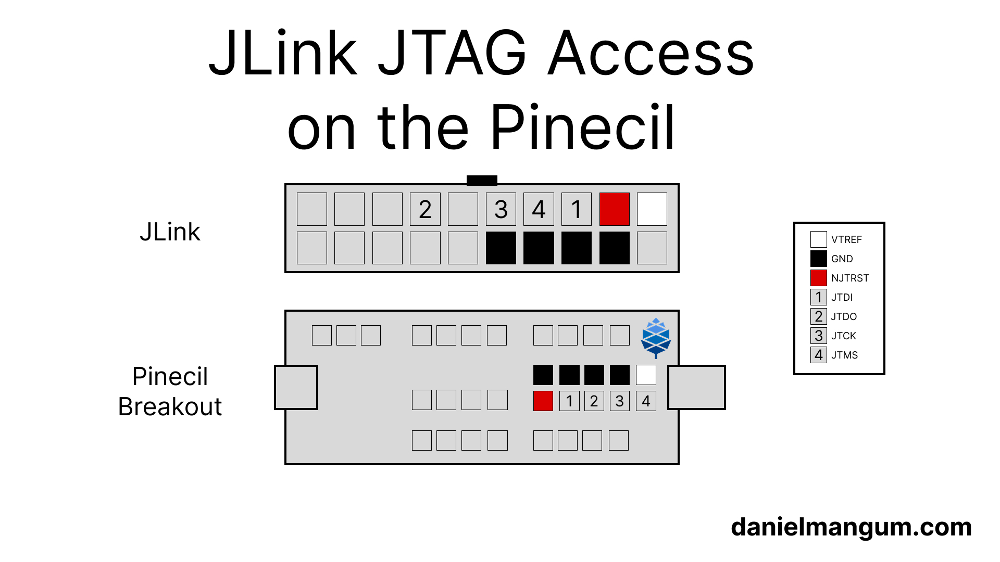
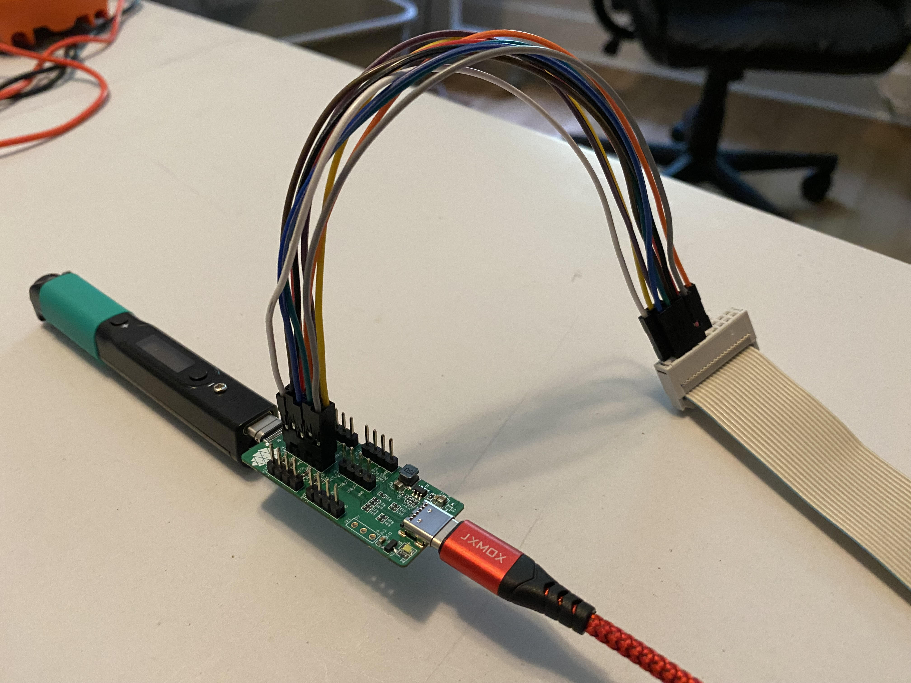

It has been more than two years since I bought a Pinecil soldering iron and wrote about soldering the breakout board and accessing the UART. I’ve been doing more work with the Pinecil as of late following the addition of upstream support for the Bouffalo Lab BL706 MCU in Zephyr (big shout out to @VynDragon, @will-tm, @josuah, and everyone else who has been contributing to the upstream Bouffalo Lab efforts!).

While accessing the UART is helpful for viewing logs, debug access is critical when chasing down early system initialization and driver issues. While there are a variety of JTAG probes on the market, I typically reach for my JLink due to its broad compatibilty and robust tooling. In order to connect a JLink to the Pinecil, the breakout board described in my previous posts is required. It includes a 10-pin header for JTAG breakout with a 3v3 reference pin, 4 GND pins, and the standard JTAG signals. While there are many adapters for attaching various debug pinouts to the JLink 20-pin connector, it is easy to use female-to-female dupont wires to connect the standard 2.54mm pins on the Pinecil breakout and the JLink. The diagram at the top of this post illustrates the pin mapping, and the image below shows the wiring with a ribbon cable between the wires and the JLink (with female-to-male dupont wires), which can be useful to avoid having to reconnect the pins each time if needing to use the JLink for other purposes between Pinecil debugging sessions.
If using a ribbon cable, it can be easy to get confused about orientation when mapping pins. With the notch upwards, the
VTrefpin (pin 1 on JLink, see white wire below) is in the top left corner of the ribbon cable pinout as it needs to mate with theVTrefpin in the top right corner of the JLink pinout.

After connecting, JLinkExe can be used to verify that the mapping is correct.
The VTref connection to the breakout board’s 3v3 pin should allow the JLink to
detect the logic voltage level (~ 3.3V).
JLinkExe
SEGGER J-Link Commander V9.28 (Compiled Mar 18 2026 15:27:55)
DLL version V9.28, compiled Mar 18 2026 15:26:49
Connecting to J-Link via USB...O.K.
Firmware: J-Link V11 compiled Apr 1 2025 10:02:30
Hardware version: V11.00
J-Link uptime (since boot): 0d 00h 00m 02s
S/N: 821010562
License(s): GDB
USB speed mode: High speed (480 MBit/s)
VTref=3.335V
To attach a debugger, such as gdb, JLinkGDBServer can be used to connect to
the JTAG circuitry on the underlying SiFive E24 core
complex in the BL706 MCU and
start a local gdb server on port 2331.
JLinkGDBServer -device E24 -if JTAG
SEGGER J-Link GDB Server V9.28 Command Line Version
JLinkARM.dll V9.28 (DLL compiled Mar 18 2026 15:26:49)
Command line: -device E24 -if JTAG
-----GDB Server start settings-----
GDBInit file: none
GDB Server Listening port: 2331
SWO raw output listening port: 2332
Terminal I/O port: 2333
Accept remote connection: yes
Generate logfile: off
Verify download: off
Init regs on start: off
Silent mode: off
Single run mode: off
Target connection timeout: 0 ms
------J-Link related settings------
J-Link Host interface: USB
J-Link script: none
J-Link settings file: none
------Target related settings------
Target device: E24
Target device parameters: none
Target interface: JTAG
Target interface speed: 4000kHz
Target endian: little
Connecting to J-Link...
J-Link is connected.
Firmware: J-Link V11 compiled Apr 1 2025 10:02:30
Hardware: V11.00
S/N: 821010562
Feature(s): GDB
Checking target voltage...
Target voltage: 3.30 V
Listening on TCP/IP port 2331
Connecting to target...
J-Link found 1 JTAG device, Total IRLen = 5
JTAG ID: 0x20000E05 (RISC-V)
Halting core...
RISC-V RV32 detected. Using RV32 register set for communication with GDB
Core implements single precision FPU
Connected to target
Waiting for GDB connection...
The following gdb command can be used to connect to the server and load the
firmware symbols.
gdb -ex 'target remote :2331' ./path/to/firmware.elf
Remote debugging using :2331
arch_irq_unlock (key=8) at /home/hasheddan/code/github.com/zephyrproject-rtos/zephyr/include/zephyr/arch/riscv/arch.h:338
338 __asm__ volatile ("csrs " RV_STATUS_CSR ", %0"
From there you can start stepping through instructions.
Happy debugging!